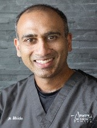

| Name | Bio |
|---|---|
|
Dr. Regina Lee Assistant Professor, P.Eng. York University |
Associate Dean for Research & Graduate Studies at York University. In this role, Professor Lee guides the school's interdiciplinary research enterprise, international expansion and industrial partnerships. In her rewsearch she develops efficient systems and infrastructure for space flight and directs the Communications and Operations Laboratory. Her current research involves developing nanosatellite technologies, and she was recently named the Canadian participant for the QB50 Mission where she will help an international team develop nanosatellites for an Earth Observation mission. She is incredibly proud of her students' achievements, including the work of the University Rover Team, which has won major international awards each year since 2007. |
|
Mr. Ryan Marciniak Astronomer, Planetarium Operator, Blogger, Speaker, and a TV Contributor | Masters degree in Astronomy. Performed a travelling Science show with the McMaster University department of Engineering called the Fireball show. |
|

Dr. Vinay Bhide, B.ArtsSc.(Hons.), D.D.S., M.Sc.(Perio.), F.R.C.D.(C) Specialist in Periodontics and Implant Dentistry Clinical Instructor, Faculty of Dentistry, University of Toronto | Dr. Vinay Bhide is a board certified Periodontist who provides the full scope of surgical periodontal and dental implant therapy. Dr. Bhide earned his DDS from the University of Toronto in 2001, and subsequently completed a one-year internship at Mount Sinai Hospital in Toronto. He completed his Master of Science and specialty training in Periodontology at the University of Toronto in 2005. Dr. Bhide is an Examiner and Fellow of the Royal College of Dentists of Canada and Diplomate of the American Board of Periodontology. In addition to private practice, Dr. Bhide is a clinical instructor in the Department of Periodontics at the University of Toronto where he is involved in didactic and clinical teaching of periodontics at both undergraduate and post-graduate levels. He has lectured nationally and internationally on various topics related to Periodontology. |
|
Professor Terry Sachlos York University | An Assistant Professor in the Department of Mechanical Engineering and the Associate Director of the Bergeron Entrepreneurs of Science and Technology (BEST) Initiative at York University. His research interests lie in stem cell engineering and regenerative medicine with a specific focus on engineering the bone, hematopoietic & leukemic stem cell microenvironments to regulate stem cell fate decisions. Prior to joining Lassonde, he received his doctorate from the University of Oxford in tissue engineering and 3D printing and conducted stem cell postdoctoral research at Harvard, MIT and McMaster. |